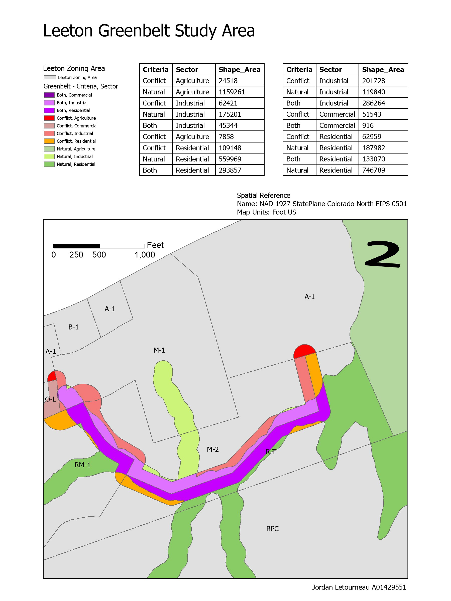
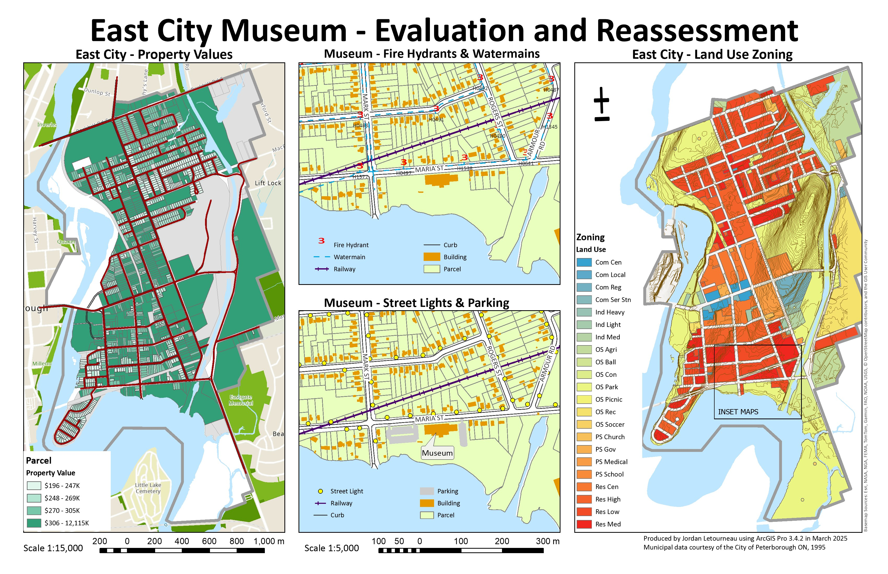
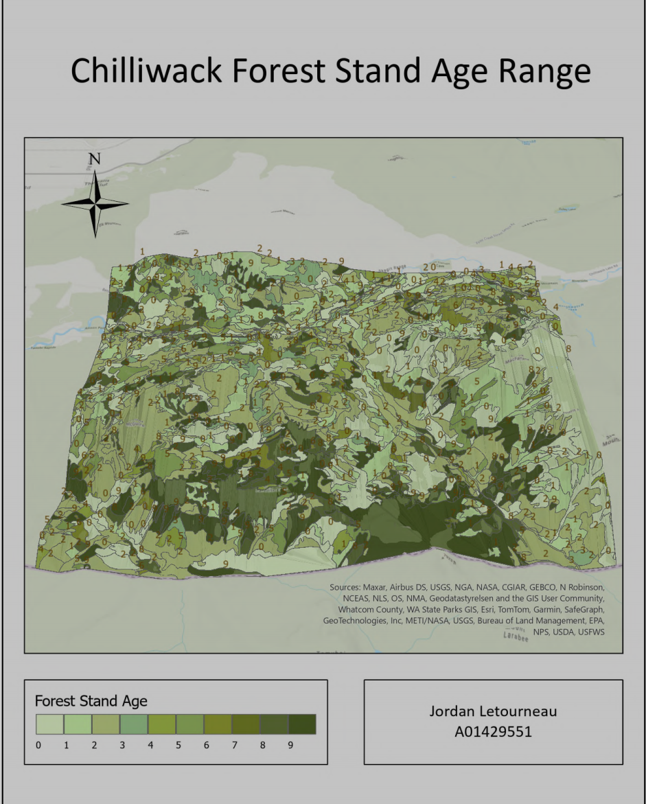

Leeton Greenbelt Study
A spatial analysis I did for GIST 8128 of the different zoning areas impacted by a proposed greenbelt. I also wrote a small python script for this assignment (available on my Github) to aid in the geoprocessing. This project utilized ArcGIS Pro for data processing and visualization.
Technologies: ArcGIS Pro, Python, Spatial Analysis

Eastcity Final Project
This was my final project for GIST 7128, it was designed around the idea of providing informational maps to a city council to aid in the evaluation of proposed improvals of a museum. This project was 7 different assignments culminationing in this final layout.
Technologies: ArcGIS Pro, Spatial Analysis, Geoprocessing

Mapping Cross Country Impacts: The Sumas Prairie Region
This was my final project for GIST 8117. I made a series of narrative maps covering the extent of the 2021 and 2025 Sumas prairie flooding. I also discussed the history of the region and the impact on the local communities. The project took place in stages over 4 weeks. Other than the pacing it was completely self-directed. The version shown here is one that I adapted for a contest submission (the original project was 6 pages).
Technologies: ArcGIS Pro, Cartography, Spatial Analysis

Chilliwack Forest Stand Age Range
This project for GIST 8128 involved converting a variety geospatial data formats into a cohesive 3D visualization for forestry analysis/inventory. I worked with CAD data, forestry polygons, and ASCII text files, transforming them all into a unified geodatabase. I then created this 3D scene in ArcGIS Pro to display the various forest stand ages using a TIN surface model and elevation contours.
Technologies: ArcGIS Pro, 3D Visualization, Data Conversion, FME, CAD